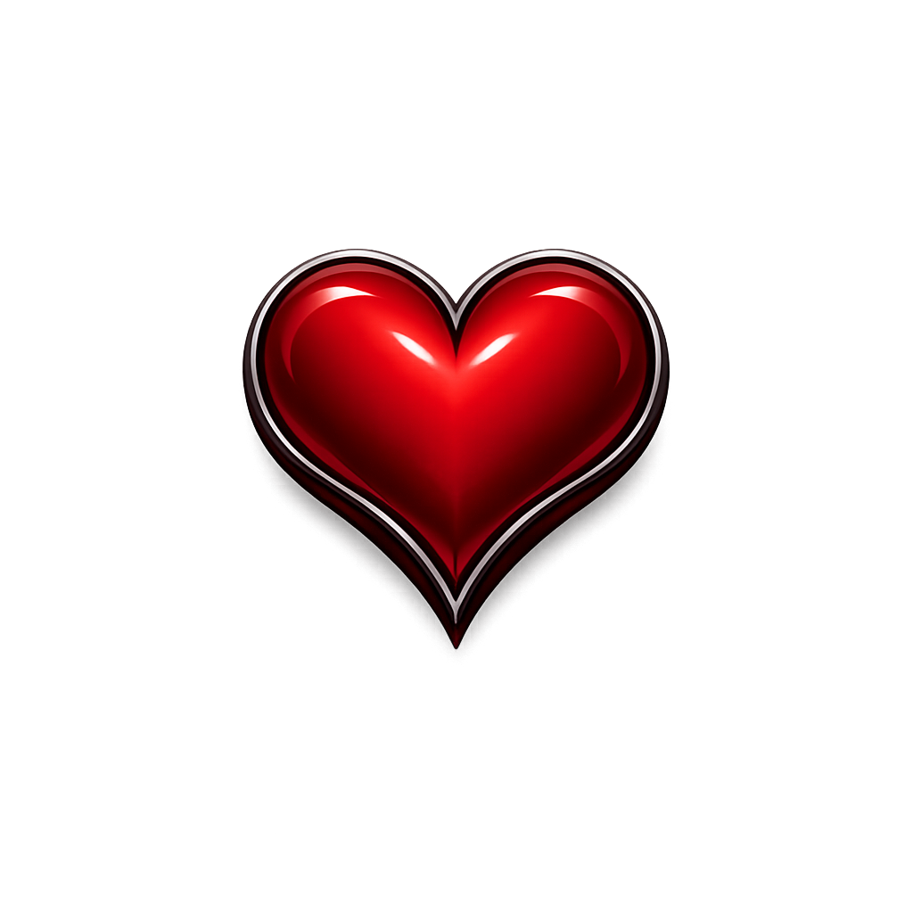
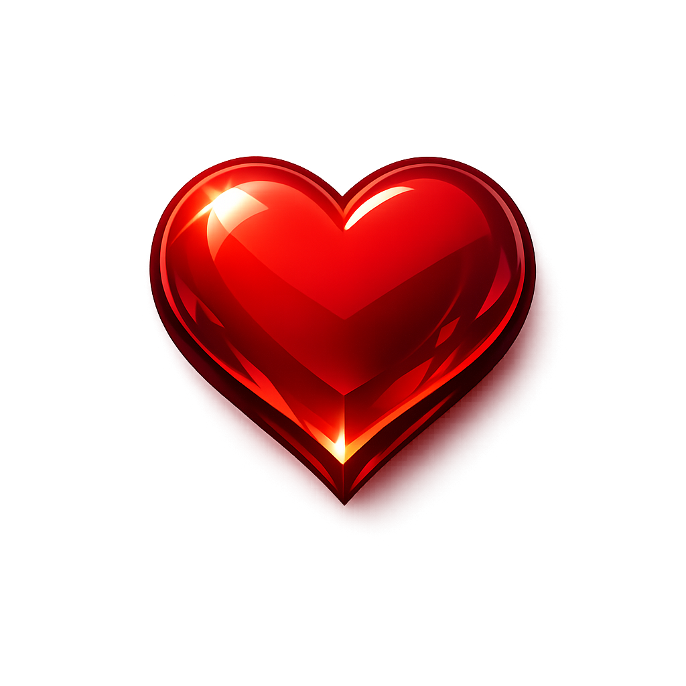
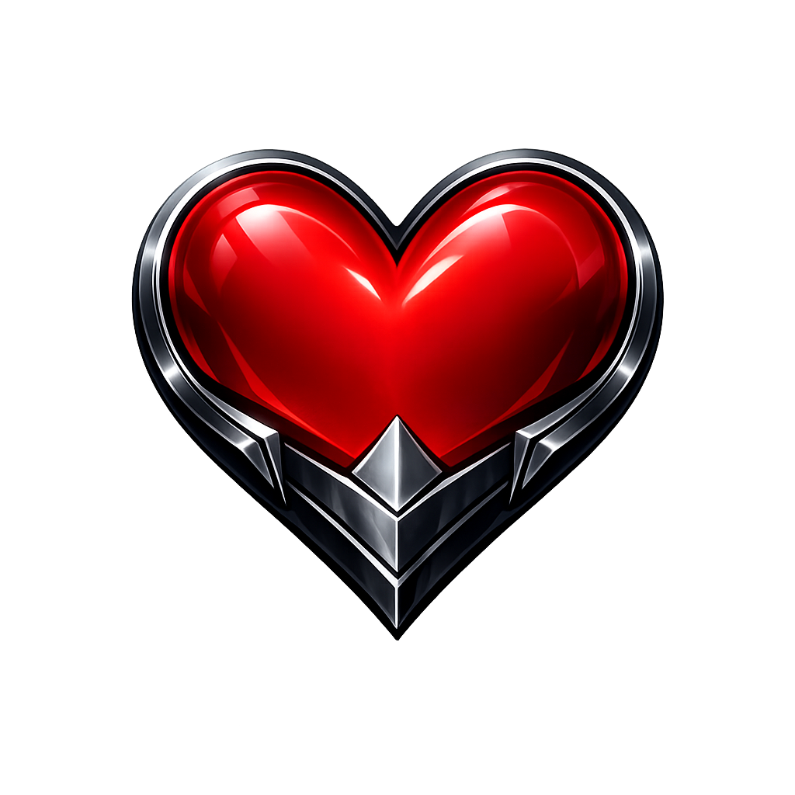
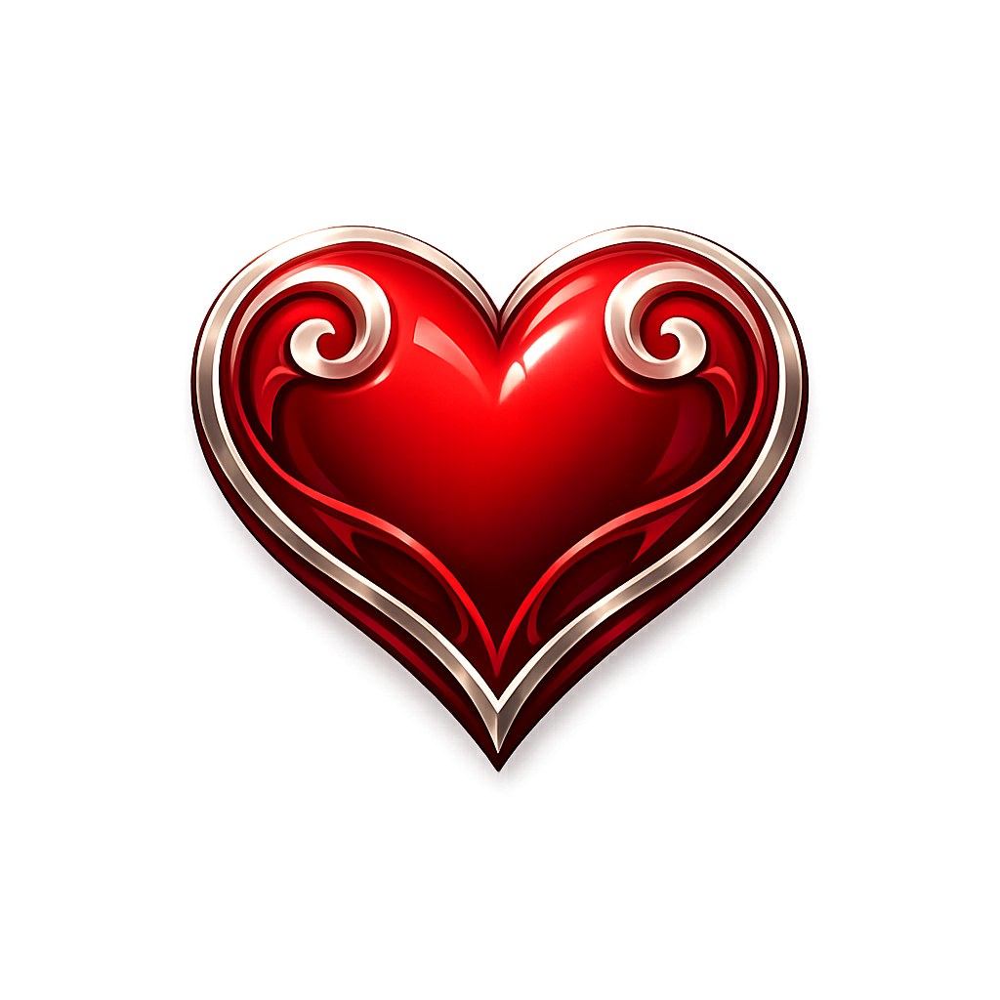
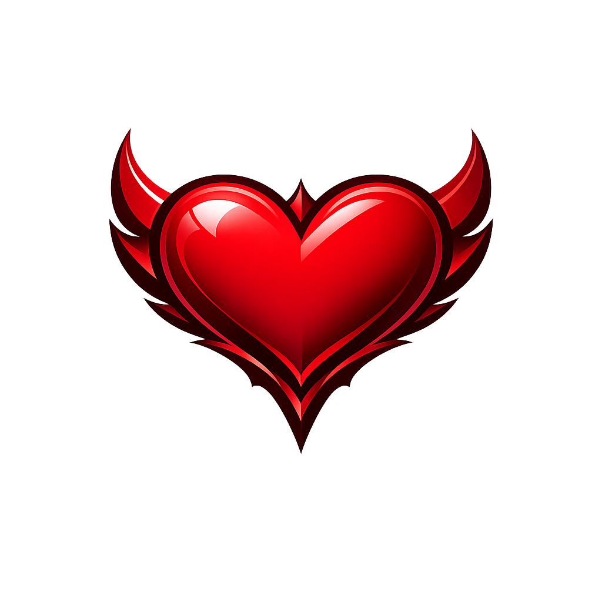

01
Curled heart
Closest to the Kingdom Hearts side. More ornamental at the top, softer read at smaller sizes.
Say: 01 if you want more elegant curl language.
VigorCheck concept board
These are original generated concepts in the lane you picked: elegant JRPG heart language plus classic game-health readability. Pick the closest one, or tell me what to combine.

01
Closest to the Kingdom Hearts side. More ornamental at the top, softer read at smaller sizes.
Say: 01 if you want more elegant curl language.

02
Closest to the Terraria side. Strongest immediate heart read, least fancy, safest silhouette.
Say: 02 if readability matters most.

03
Pushes a heroic action-RPG direction. More assertive lower point, slightly tougher feel.
Say: 03 if you want more game-UI edge.

04
Cleaner and more refined than 01. Still premium, but with less ornament and better app-icon potential.
Say: 04 if you want premium without overdesign.
05
Tests the heart as part of a system instead of a standalone icon. Useful if the frame matters as much as the heart.
Say: 05 if you want the welcome hero to feel more like a game HUD asset.

06
Best attempt at the obvious blend. Designed to feel like a future default if nothing else wins.
Say: 06 if you want the most balanced starting point.